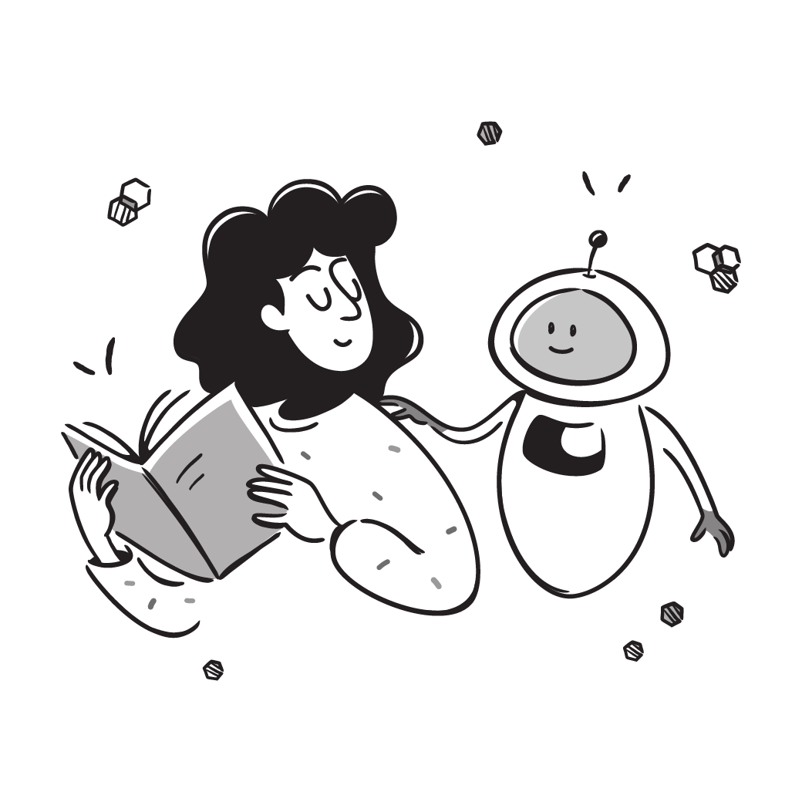

Wickham’s Proposal:
Machines Need Meaning, Not Just Data
![]()
If thought can corrupt language, language can also corrupt thought.
The Idea of data-dict.yaml and Its Broader Implications
Hadley Wickham, creator of the tidyverse ecosystem for R, recently proposed data-dict.yaml, a machine-readable data dictionary designed to accompany tabular datasets. Rather than embedding explanations within spreadsheets or leaving documentation to a README file, Wickham proposes storing metadata describing variables, units, labels, and constraints in a standardized format. In my view, Wickham’s proposal has not yet received the attention they deserve.
At first glance, the proposal may appear to address nothing more than a practical problem in data analysis. Yet the proposal points toward a much larger question: the future of artificial intelligence may depend not only on larger models and datasets, but also on richer forms of knowledge representation.
This idea deserves attention beyond the R community. A data dictionary is not simply documentation for human readers; it is a description that software can interpret directly. In other words, metadata becomes part of the information itself. Wickham’s proposal therefore illustrates a broader principle: whenever meaning can be expressed explicitly rather than inferred implicitly, both humans and machines benefit. Although data-dict.yaml is currently intended for tabular data, its underlying philosophy could influence many other forms of digital information, from documents and research data to archives and public records.
The emergence of AI invites us to rethink the design philosophy behind how information is published and documented. For decades, digital resources were designed primarily for human readers. Combining data, explanatory notes, visual formatting, and contextual information in a single document made sense because people could easily integrate these elements while reading.
This approach remains common in many government datasets. In Japan, for example, statistical data are often distributed as Excel workbooks that combine numerical tables with explanatory notes, merged cells, and visual formatting. While convenient for human readers, such documents require researchers to spend considerable effort extracting and restructuring data before analysis can begin.
Many international organizations, including the OECD and the World Bank, have already moved toward a different model by separating datasets from their accompanying documentation through codebooks and metadata files. This is an important step toward machine-readable data. Yet the relationship between the data and their metadata is still often reconstructed by human users rather than represented explicitly in a form that software can understand directly.
From this perspective, proposals such as data-dict.yaml represent more than a new documentation format. They point toward a richer model of knowledge representation in which not only data but also their meaning and structure become interpretable by machines.
The Missing Perspective on AI: Metadata as AI Infrastructure
Yet the design philosophy of information publishing remains largely absent from public discussions of artificial intelligence. Much attention is devoted to prompt engineering—the art of writing instructions that produce better responses from large language models. At the same time, governments and technology companies invest heavily in computational infrastructure, emphasizing more powerful processors, larger memory capacities, and increasingly sophisticated hardware. Another widely held optimistic assumption is that ever larger collections of data will, by themselves, produce more capable AI systems.
While these developments are undoubtedly important, they are based on the assumption that larger models, more data, and greater computational power are the primary drivers of AI progress. Instead of continuously teaching humans how to communicate more effectively with AI, perhaps we should devote greater attention to teaching AI how to understand the information we already possess. The distinction is subtle but fundamental. Prompt engineering improves communication at the moment of interaction. Metadata improves the information before the interaction even begins.
Large language models are remarkably capable of inferring meaning from context. A column named age will usually be interpreted correctly without additional explanation. Yet this ability is probabilistic rather than certain. Ambiguous abbreviations, undocumented variables, inconsistent coding systems, and poorly organized documents all increase uncertainty. When metadata explicitly defines these elements, AI no longer needs to guess. The task shifts from inference to interpretation 1.
1 A related development can be seen in Google’s Open Knowledge Format (OKF), which aims to provide a portable and interoperable way of representing knowledge for AI systems. Google summarizes the motivation behind this initiative with the phrase, “What’s missing is a format, not another service.” Although OKF addresses a broader domain of organizational knowledge rather than tabular datasets, it shares an important principle with Wickham’s data-dict.yaml proposal: information becomes more valuable when its meaning and structure are explicitly represented in a machine-readable form.
This distinction also has practical implications. Recent debates surrounding AI frequently emphasize access to ever-larger collections of data, including sensitive personal information. More data may indeed improve certain applications, particularly in fields such as medicine where rare cases are valuable. Yet quantity alone does not guarantee understanding. A million observations labeled simply as “BP” remain ambiguous unless accompanied by metadata explaining whether the abbreviation refers to blood pressure, boiling point, or something else. Rich metadata does not replace data collection, but it substantially increases the value of the data that already exist.
The same principle applies far beyond datasets. PDF files can contain metadata describing authorship, keywords, and document structure. Markdown documents represent hierarchy through headings, while Quarto separates metadata from content using YAML. Search systems such as macOS’s Spotlight make extensive use of metadata to organize and retrieve information. These examples suggest that computers perform better not merely because they process more information, but because humans have represented that information more clearly. Metadata reduces ambiguity before computation begins.
Whether richer metadata could also reduce computational requirements remains an open research question. It would be premature to claim that metadata could replace larger language models or more powerful hardware. However, reducing ambiguity may reduce the amount of inference required during processing. If AI spends less effort determining what information means, more computational resources can be devoted to reasoning with that information. Rather than viewing data collection, computational power, and model size as the only foundations of AI, knowledge representation deserves consideration as an equally important area of investment.
Beyond Prompt Engineering
This perspective also changes how we think about the future of AI policy. Prompt engineering has become an important educational topic because it teaches people how to interact with AI systems. Yet prompts are inherently temporary. They belong to a particular conversation and disappear once that interaction ends. Metadata is different. Once attached to data or documents, it benefits every future user—human or machine—without requiring the same explanations to be repeated. Investing in metadata therefore resembles investing in public infrastructure rather than individual conversations.
The broader historical context is equally significant. During the Enlightenment, Denis Diderot envisioned the Encyclopédie not simply as a collection of knowledge but as an organized system through which knowledge could be understood and transmitted across generations 2. Today’s challenge is similar, although the audience has expanded. Knowledge must now be interpretable not only by human readers but also by intelligent machines. In this sense, metadata represents more than technical documentation; it is becoming part of the architecture of knowledge itself.
2 Writing this essay also reminded me of an earlier Japanese intellectual tradition concerned with how knowledge can be organized and represented. After the Second World War, scholars such as Takeo Kuwabara and Tadao Umesao explored questions related to the collection, classification, and preservation of knowledge, partly inspired by studies of the Encyclopédie. Umesao’s extensive use of index cards in historical and ethnological research was an attempt to create a structured system for organizing scholarly information. Although I recognize the value of computational approaches such as R for organizing and analyzing data, I also appreciate the serendipity that analogue systems such as index cards can produce.
Although these efforts emerged from a very different historical context, they resonate with contemporary discussions of metadata and knowledge representation. Perhaps the age of AI provides an opportunity to revisit such intellectual traditions and reconsider what they can teach us about organizing knowledge in forms that can be transmitted, connected, and reused.
The future of artificial intelligence will certainly require better algorithms, more efficient hardware, and high-quality datasets. Yet these advances alone may not be sufficient. If AI is expected to assist scientific research, public administration, education, and historical inquiry, it must be able to understand information with greater precision rather than merely infer it from context. Hadley Wickham’s proposal reminds us that the next major advance in AI may not come solely from building larger models. It may also come from building better descriptions of the knowledge we already possess. The next revolution in artificial intelligence may therefore begin not with larger models, but with better metadata.

Illustration by Mary Amato (used under license).